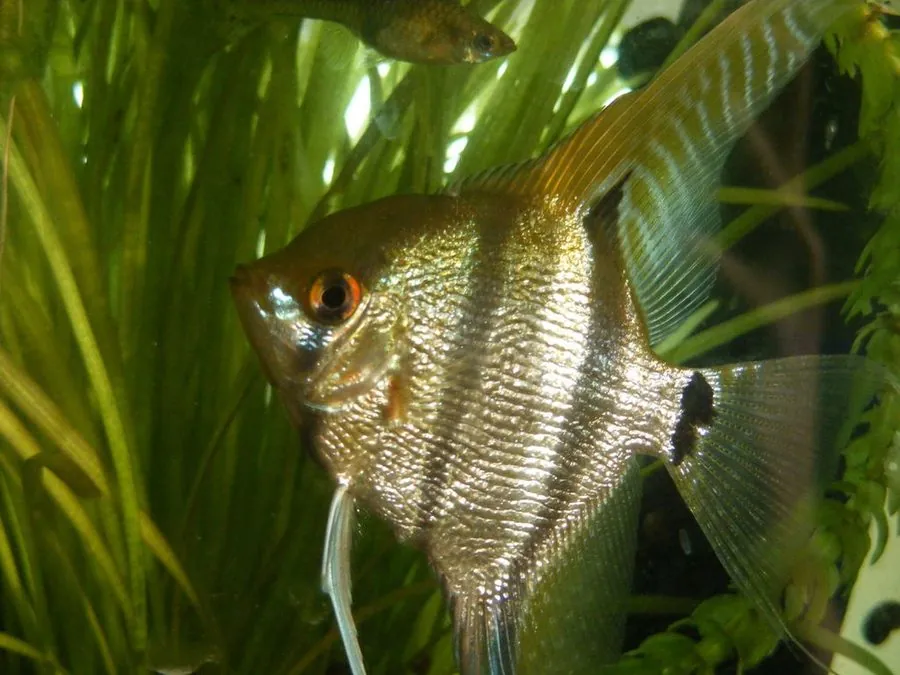

鱼类 · 动物界
神仙鱼 Pterophyllum scalare

原产南美亚马孙流域的淡水鱼，体侧扁如燕、背鳍与臀鳍高耸，游姿优雅，是全球最受欢迎的观赏鱼之一。
- 分类
- 门脊索动物门纲硬骨鱼纲目鲈形目科慈鲷科属神仙鱼属
- 栖息环境
- 南美河流中水流缓慢、水草茂密的浅水区与泛滥林水域
- 地理分布
- 南美亚马孙河、奥里诺科河及圭亚那的河流，全世界广泛人工养殖
- 保护级别
- 暂无评估；中国未列入国家重点保护野生动物名录
物种志
神仙鱼体侧扁呈菱形，背鳍和臀鳍高耸如燕翼，腹鳍延长成丝状，尾鳍浅叉；野生型体色银灰，体侧分布数条黑色竖带，眼睛上还有一道黑纹。经过长期人工选育，如今已有纯白、黑纱、大理石、金头等大量变异品系，体长可达 15 cm，连鳍高度可超过 25 cm。
神仙鱼原产于南美洲亚马孙河、奥里诺科河及圭亚那的河流，喜欢水流缓慢、水草茂密、有沉木遮阴的水域，适宜水温 24–28 ℃、弱酸性软水。它是杂食性鱼类，以水生昆虫、甲壳类、小鱼和植物碎屑为食，性情相对温和，但繁殖期有较强的领域性。繁殖时雌鱼把卵产在叶片或石块上，每窝 200–400 枚，亲鱼会共同扇水护卵并带领幼鱼觅食，护幼行为在观赏鱼中十分典型。神仙鱼在中国主要作为人工养殖的观赏鱼，尚未被列入国家重点保护野生动物名录，也没有IUCN 的正式评估。
形态与习性
- 食性杂食，以小昆虫、甲壳类、小鱼和植物碎屑为食
- 体长成鱼体长约 15 cm，连鳍高可达 25 cm
- 寿命约 8–10 年
- 繁殖开放产卵，每窝 200–400 枚，亲鱼共同护卵护仔
- 水温适宜水温 24–28 ℃，弱酸性软水
- 性情相对温和，繁殖期具有领域性
趣味知识
- 神仙鱼的背鳍和臀鳍像燕子的翅膀，所以中文也叫“燕鱼”。
- 野生神仙鱼会利用水草和沉木的阴影隐藏自己，伺机捕食小鱼。
- 它的体侧竖带在幼鱼时最明显，随年龄增长可能逐渐变淡。